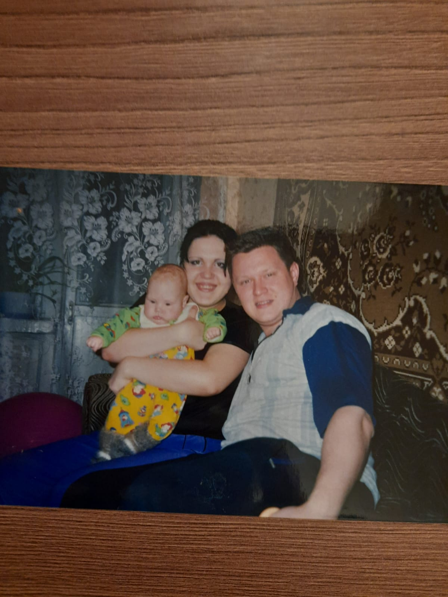
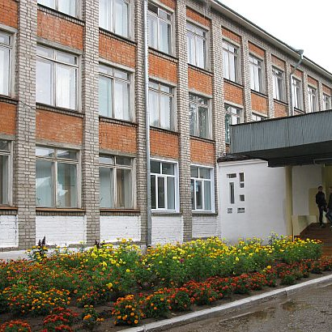
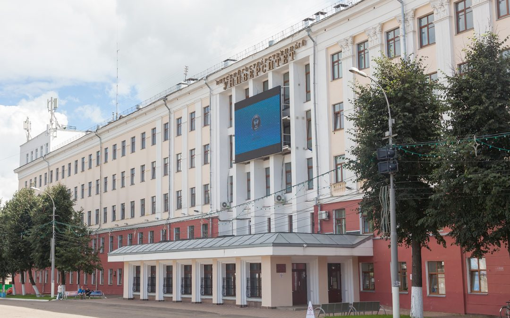

Биография

Всем привет, меня зовут Сентемова Елизавета Александровна. Я родилась 11 сентября 2004 года в городе Омутнинске. Мое детство было очень веселым и насыщенным наполненное яркими событиями. Папа с мамой изо всех сил делали мое детство счастливым и в меру своих возможностей придумывали разные веселья. Вместо мультиков перед телевизором мы часто гуляли на свежем воздухе, независимо от погоды.

В 2011 году, в возрасте 6 лет, я пошла в школу c углубленным изучением отдельных предметов. Школа-это большая семья, для каждого ученика, и, как в любой семье, так и в школе есть свои родители – учителя.
Именно они впервые научили нас писать, читать, постигать глубины знаний. В школе мы находим настоящих друзей, обретаем знания и учимся жизни. Школа дает нам опору, дарит тепло и радость.

Учителя посвящают нам душу. Уютную атмосферу школе предают стены, на которых нарисованы персонажи детских сказок. В школе проходит множество мероприятий, на которых дети поют песни, танцуют, рассказывают стихи, ставят актёрские постановки. Именно на таких мероприятиях каждый ребёнок может показать свои таланты остальным. Нашу школу окружает красивый, уютный парк. На территории школы есть баскетбольная площадка, различные турники. С 8 класса я училась в классе с углубленным изучением информатики, математики и физики. Это было не легко, потому что каждый триместр мы сдавали экзамены. Несмотря на все трудности, я рада, что все 11 лет проучилась в школе №1. Я горжусь своей школой и считаю, что она лучшая в городе.

В 2022 году я поступила в Вятский Государственный Университет в городе Киров. Я выбрала факультет автоматики и вычислительной техники, направление: информационная безопасность телекоммуникационных сетей. Жизнь студента очень трудная. Я должна контролировать свой день самостоятельно. У меня нет возможности попросить помощи у родителей и друзей и я должна решать проблемы самостоятельно. Конечно, я могу позвонить своим родителям и попросить совет, но сейчас абсолютно все зависит от меня. В будущем я уверена, что у меня будет отличная работа, которую я буду любить.